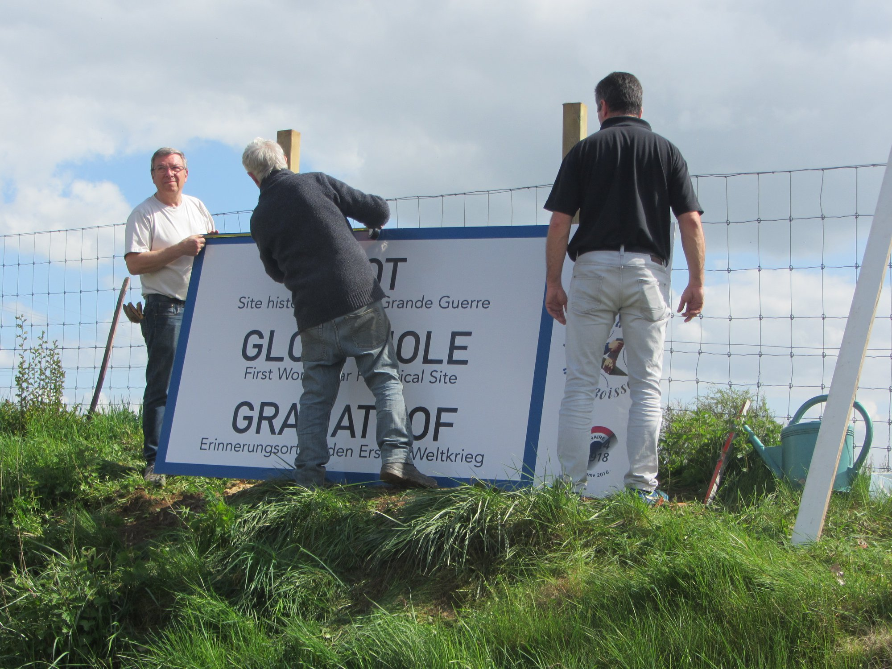
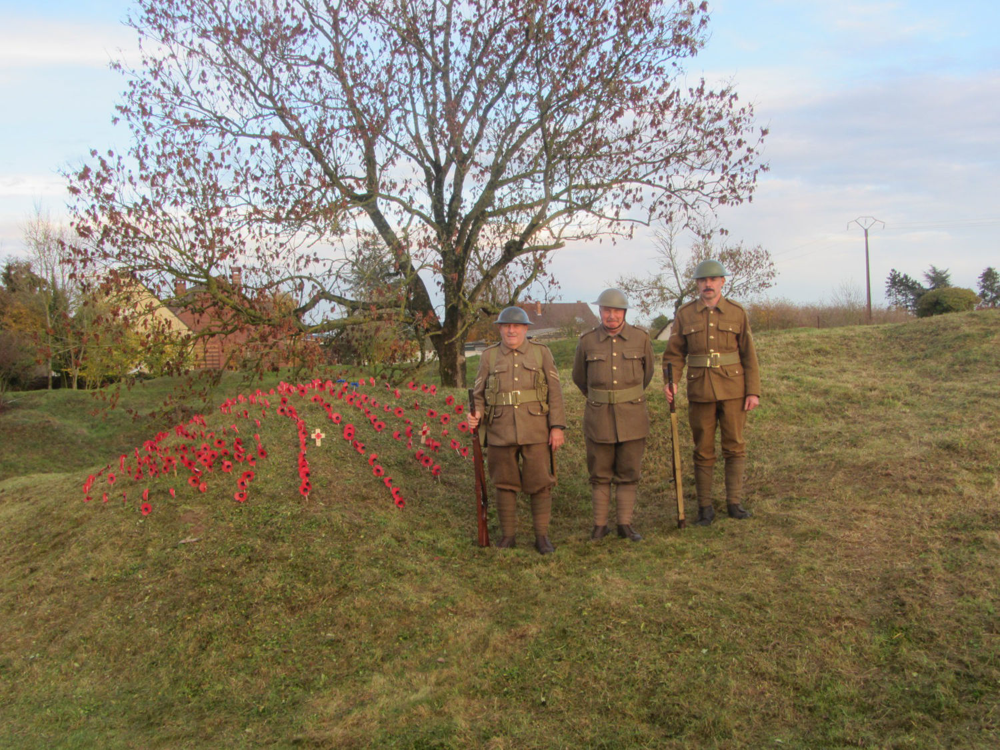
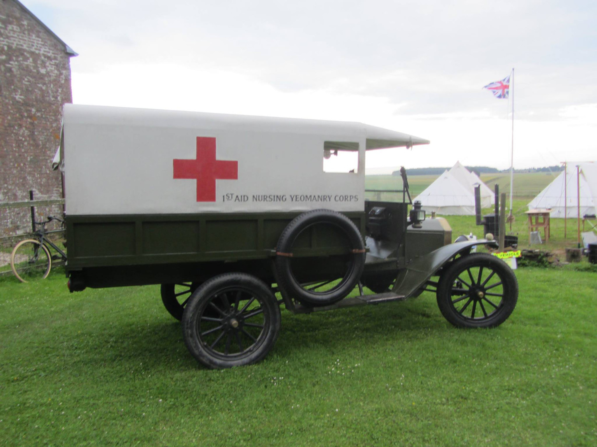
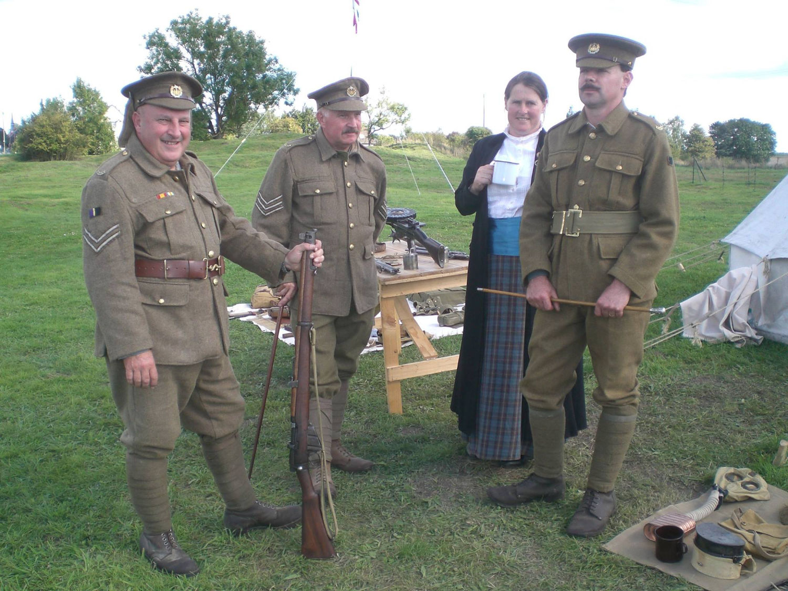
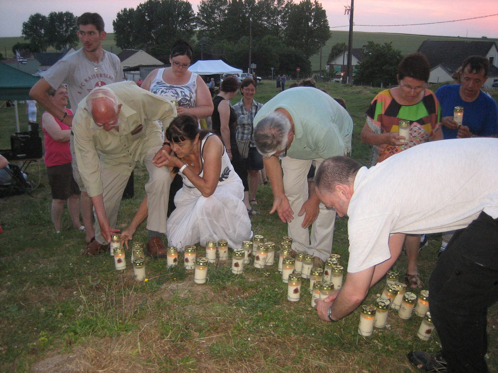
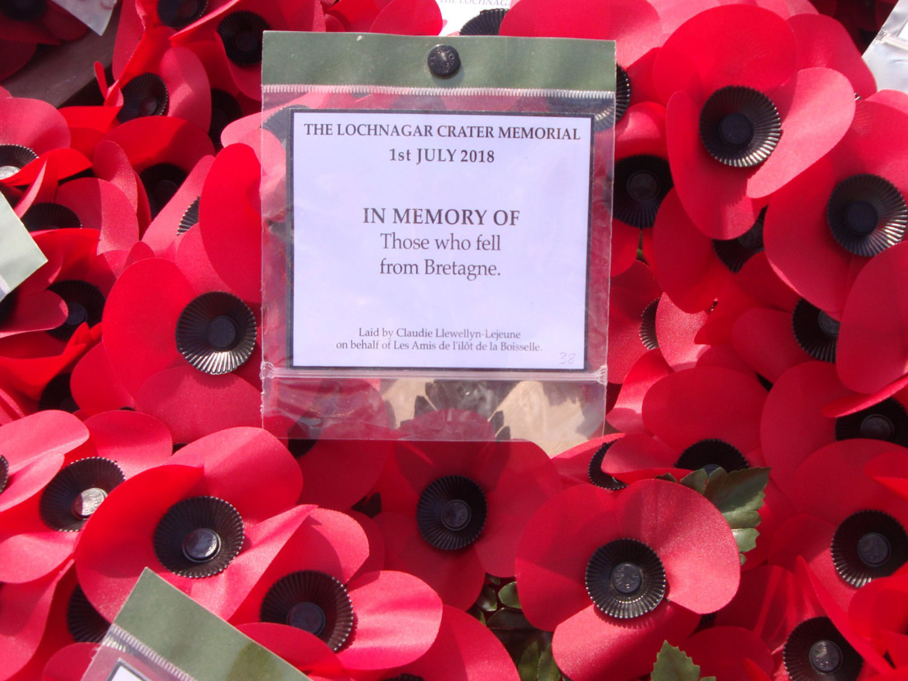

Les Amis de l'îlot participent activement à l'entretien régulier du site pour rendre visible les traces de la Grande Guerre. Ils vous sensibilisent à son histoire en vous proposant des visites sur rendez-vous et en ouvrant exceptionnellement le site tout au long de l'année.

En organisant cérémonies commémoratives et événements culturels sur le site, en partenariat avec d'autres associations, les Amis de l'îlot vous transmet la mémoire et le souvenir des soldats, quelque soit leur nationalité, qui ont combattu à l'îlot.
Vous pouvez nous aider à entretenir le site, à accueillir le public et à veiller à leur sécurité tout au long de leur visite. Vous pouvez également adhérer aux Amis de l'îlot et bénéficiez d'invitations aux événements sur le site, d'informations régulières sur la vie du site et des Amis de l'îlot, d'accès à des conférences-débats et d'excursions de découverte.



